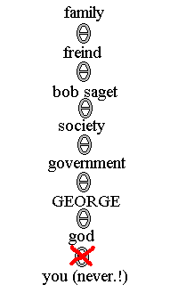

Subject 3 - Throw Your Government Over
the railing to a river and hope they die in riverf
i bet right now you aske "but gdoug what does goverment have to do with gain weight?!?!?!" and answer is simplre: blame chain ! refer to illustration below

as you can plainely see you should never take blame for anythings in life.
reasons why ?? you lose moral! howe can weigh lose be possible with 0 moral
point? even with natural 20 and you are level 15 bard you still have -17%
chance of succedd (and chance of critical miss may break you harp of enchanting
+7 and at that pointe you may as wells commit suicides)!